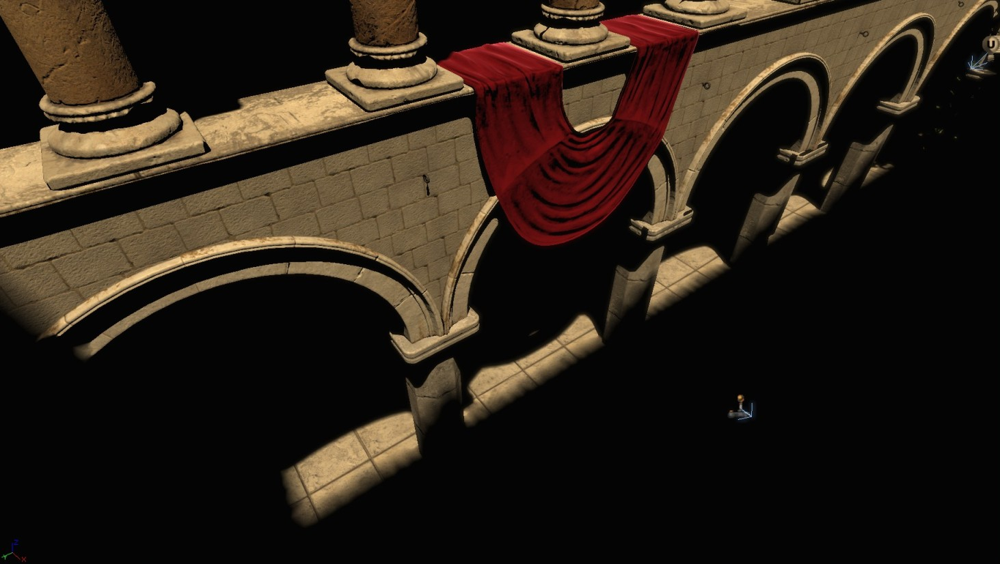
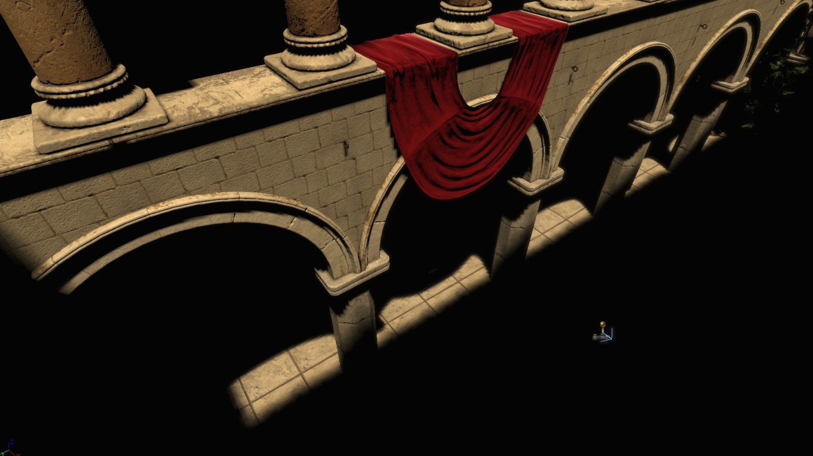
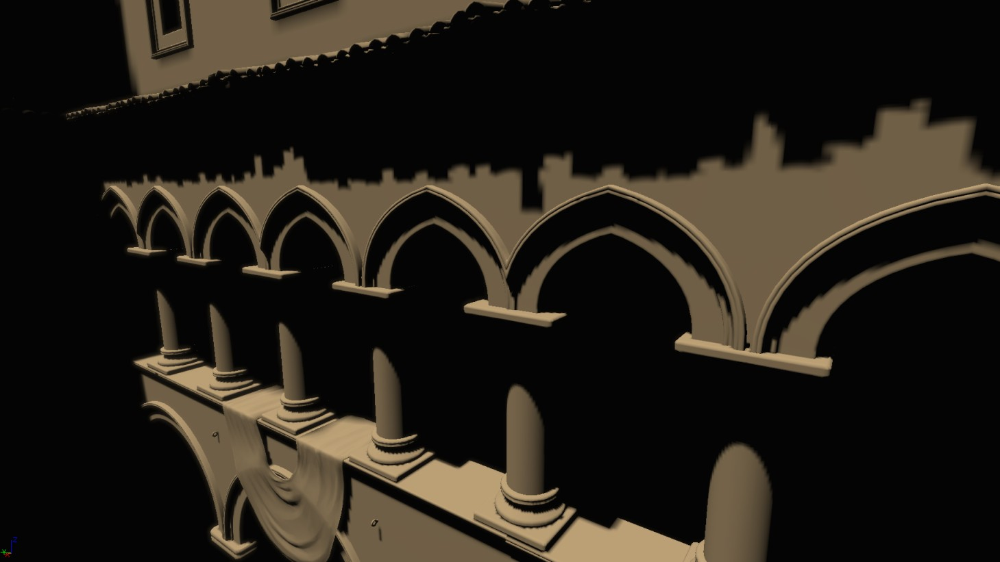

UDN
Search public documentation:
DistanceFieldShadowsCH
English Translation
日本語訳
한국어
Interested in the Unreal Engine?
Visit the Unreal Technology site.
Looking for jobs and company info?
Check out the Epic games site.
Questions about support via UDN?
Contact the UDN Staff
日本語訳
한국어
Interested in the Unreal Engine?
Visit the Unreal Technology site.
Looking for jobs and company info?
Check out the Epic games site.
Questions about support via UDN?
Contact the UDN Staff
距离场阴影
文档变更记录: 由 Daniel Wright 创建。
概述
它们的工作原理
限制
对比 1

和上面的距离场阴影具有同样分辨率的阴影因数阴影。它是其它的可切换的光源使用的，每个贴图像素占 1 个字节。 在较高分辨率下的阴影因数阴影，调整它的分辨率来尝试获得和距离场阴影同样的效果。分辨率在每个维度上增加 2-4 倍，最终的光照贴图内存消耗大约比每个贴图像素占两个字节的距离场阴影高 3.7 倍。
在较高分辨率下的阴影因数阴影，调整它的分辨率来尝试获得和距离场阴影同样的效果。分辨率在每个维度上增加 2-4 倍，最终的光照贴图内存消耗大约比每个贴图像素占两个字节的距离场阴影高 3.7 倍。

对比 2
 和上面的距离场阴影具有同样分辨率的阴影因数阴影。
在较高分辨率下的阴影因数阴影，调整它的分辨率来尝试获得和距离场阴影同样的效果。
和上面的距离场阴影具有同样分辨率的阴影因数阴影。
在较高分辨率下的阴影因数阴影，调整它的分辨率来尝试获得和距离场阴影同样的效果。
